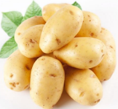
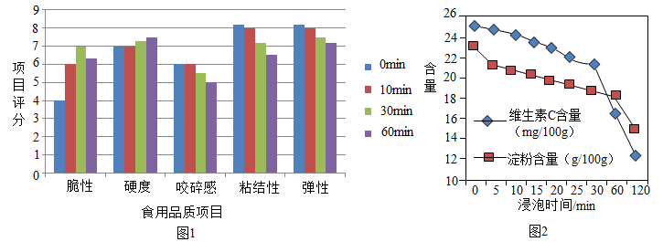

2019年北京市中考化学真题 · 科普阅读 第16题
16. 阅读下面科普短文。
土豆是继水稻、小麦、玉米之后的第四大粮食作物，含淀粉、蛋白质、维生素C等多种营养物质，是餐桌上的美味食材。

表1鲜土豆中主要营养物质的含量（每100g）
蛋白质/g | 脂肪/g | 淀粉/g | 钙/mg | 磷/mg | 维生素C/mg |
1.5-2.3 | 0.4-0.94 | 17.5-28.0 | 11-60 | 15-68 | 20-40 |
土豆切开后发生褐变，用水浸泡能防止褐变，但会引起营养物质流失。用土豆片进行实验，测得其食用品质、淀粉含量和维生素C含量随浸泡时间的变化如下:

土豆变绿、发芽时，龙葵素含量显著增高，而龙葵素多食可导致中毒，就算是把变绿、发芽的部位削掉，也不宜食用。除食用外，土豆还可以作为原料广泛用于医药、化工、纺织、造纸等工业中。
依据文章内容回答下列问题。
（1）表1中的“钙”指的是______________（填“元素”或“原子”）。
（2）由图1可知：60min内，_________（填序号，下同）。
A浸泡30min比10min脆性分值高
B浸泡10min，硬度、咬碎感均无明显变化
C随着浸泡时间的增加，粘结性、弹性分值均降低
（3）由图2可知：土豆片的淀粉含量与浸泡时间的关系是_______________________。
（4）变绿、发芽的土豆不宜食用，其原因是___________________________________。
（5）下列说法正确的是_____________。
A土豆是四大粮食作物之一B土豆中维生素C含量最高
C用水泡可防止土豆片褐变D土豆开发应用的前景广阔
【生产实际分析】